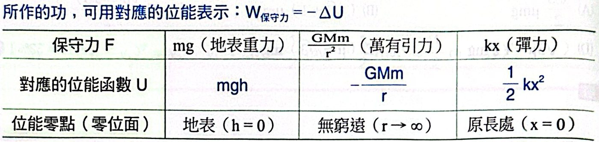
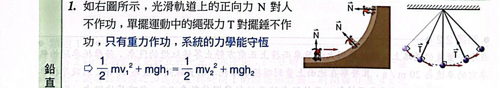
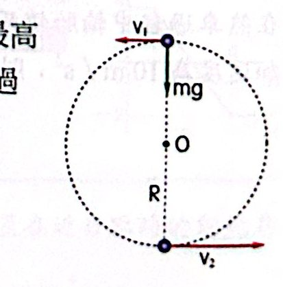
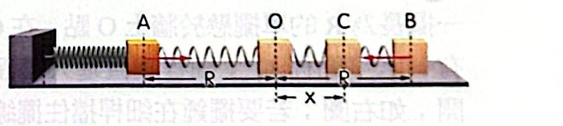
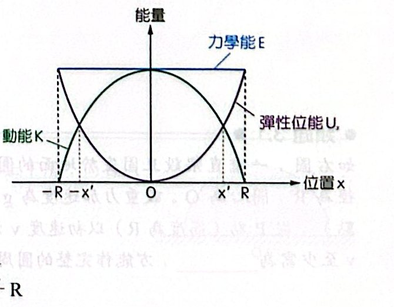
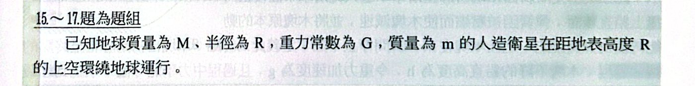
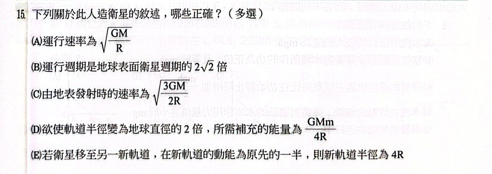
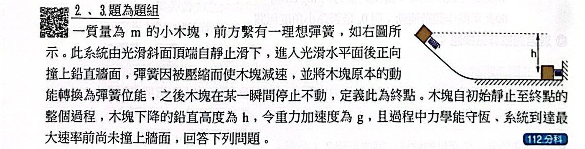
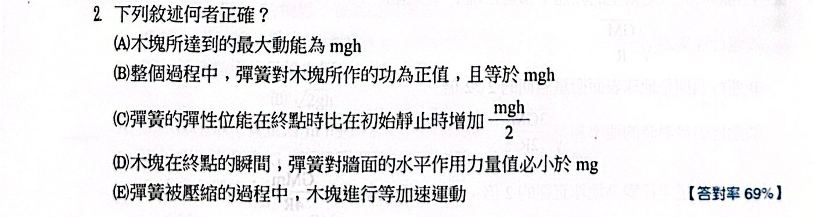

焦點 1 功與動能
上一單元用「力 × 時間」得到衝量與動量；這一單元換成「力 × 距離」，得到功與能量。兩套方法互補：碰撞問題常用動量，而問「最後速度多大、能爬多高」的問題，用能量常常一行就解完，完全不必管中間的加速度怎麼變。
一、功
物理上的「作功」，指的是力讓物體沿著力的方向移動了一段距離。只有平行位移的那部分力才算數：提著書包水平走路，手的力向上、位移水平，手對書包不作功。
圖（一）力與位移夾 θ；圖（二）物體同時受好幾個力作功
W ＝ F·S ＝ FS cosθ（J）功的定義為什麼？
為什麼要乘 cosθ
只有沿著位移方向的分力 F cosθ 真的在「推著物體走」；垂直位移的分力 F sinθ 不幫忙也不阻礙。所以 W ＝ (F cosθ) × S。
功有正負
- 0° ≤ θ ＜ 90°：W ＞ 0，力在幫忙（給物體能量）
- θ ＝ 90°：W ＝ 0（向心力、正向力沿著平面滑動時都不作功）
- 90° ＜ θ ≤ 180°：W ＜ 0，力在阻礙（拿走物體能量），例如動摩擦力
變力怎麼辦
力隨位置改變時，畫 F–x 圖，曲線下的面積就是功（x 軸上方為正、下方為負）。彈簧力就是典型：W ＝ ½kx²。
合力的功
合力所作的功 ＝ 各個力分別作功的總和：W合 ＝ W推 ＋ W摩擦 ＋ W重力 ＋ W正向力。
二、功能定理
作功的「結果」是什麼？就是讓物體的速度改變──更精確地說，讓動能改變。
K ＝ ½mv²；W合 ＝ ΔK功能定理為什麼？
推導（定力）
等加速度直線運動：v2² ＝ v1² ＋ 2aS，兩邊乘 ½m：
½mv2² − ½mv1² ＝ maS ＝ (ΣF)·S
⇒ 合力作的功 ＝ 動能的變化。把 ½mv² 定義成動能，就得到功能定理。
邏輯重點
- 只有合力的功才等於 ΔK；單一個力的功不等於動能變化。
- 變力、曲線運動也成立（把路徑切成很多小段，每段都成立再相加）。
- 動能是純量，和方向無關：速度方向改變但速率不變（等速圓周運動），ΔK ＝ 0，合力（向心力）不作功。
常見錯誤
(Δv)² ≠ v2² − v1²，所以 ΔK ≠ ½m(Δv)²。例如速度反向 v → −v，Δv ＝ 2v，但 ΔK ＝ 0。
三、功率
同樣的功，做得快和做得慢不一樣──爬同一層樓，跑上去比走上去累。單位時間作的功就是功率。
P̄ ＝ W/t；P ＝ F·v（W，瓦特）功率為什麼？
推導
瞬時功率 P ＝ ΔW/Δt ＝ F·ΔS/Δt ＝ F·v
應用：車子的極速
引擎最大功率固定時，F ＝ P/v：速度愈快，能提供的推力愈小。當推力降到等於阻力，就不能再加速──這就是極速。所以極速時 阻力 ＝ P/vmax。
單位
1 W ＝ 1 J/s；1 度電 ＝ 1 千瓦·小時 ＝ 3.6×106 J。
焦點 1 範例與類題
看答案與詳解收起
答(D)
解合力作功 ＝ m × (a–x 圖面積)：
面積 ＝ 1.5 × 100 ＋ ½ × 100 × 1.5 ＝ 225
½mv² ＝ m × 225 ⇒ v² ＝ 450 ⇒ v ≈ 21 m/s（x ＝ 200 m 後 a ＝ 0，速率不再增加）
看答案與詳解收起
答4 J
解a–t 面積 ＝ Δv：0～1 s 為 2；1～4 s 上下三角形抵消為 0 ⇒ 末速 2 m/s
W ＝ ΔK ＝ ½ × 2 × 2² ＝ 4 J
看答案與詳解收起
答3K/4
解角動量守恆 r近v近 ＝ r遠v遠 ⇒ v遠 ＝ v近/2 ⇒ K遠 ＝ K/4
萬有引力作功 ＝ ΔK ＝ K − K/4 ＝ 3K/4
看答案與詳解收起
答(E)
解全程（P → R，長 L）用功能定理，起點、終點速度都取 0（恰到 R）：
- F 只推了 L/2：WF ＝ FL/2
- 摩擦力 μmg cos60° ＝ μmg/2，全程作功 −μmgL/2
- 重力：上升 L sin60°，作功 −(√3/2)mgL
FL/2 − μmgL/2 − (√3/2)mgL ＝ 0 ⇒ F ＝ (μ ＋ √3)mg
看答案與詳解收起
答5
解合力 ＝ 6.0 − 0.25 × 2 × 10 ＝ 1.0 N ⇒ ΔK ＝ 1.0 × 5.0 ＝ 5 J
看答案與詳解收起
答12
解摩擦力作功 −μmg·d：½mv² ＝ ½m(20)² − 0.8 × m × 10 × 16
v² ＝ 400 − 256 ＝ 144 ⇒ v ＝ 12 m/s
焦點 2 力學能守恆
四、保守力與位能
有一類力很特別：它作的功只看起點和終點，和走哪條路無關──重力、彈力、靜電力都是。這類力叫保守力。既然功只由位置決定，就可以替每個位置「記一筆帳」，這筆帳就是位能。摩擦力、空氣阻力不是保守力：繞遠路摩擦就作更多負功。
W保守力 ＝ −ΔU；U重 ＝ mgh、U萬有引力 ＝ −GMm/r、U彈 ＝ ½kx²位能為什麼？
為什麼有負號
物體往下掉，重力作正功，而位能減少；保守力作多少正功，位能就少多少：W ＝ −ΔU。
三種位能怎麼來
- 地表重力：力 mg 固定，升高 h 重力作功 −mgh ⇒ U ＝ mgh（地面為零）
- 彈力：F–x 圖是斜線，面積 ½kx² ⇒ U ＝ ½kx²（原長為零）
- 萬有引力：把物體從 r 移到無窮遠，引力作功 −GMm/r ⇒ 取無窮遠為零，U ＝ −GMm/r（永遠是負的）
零點可以自己選
位能的「數值」跟零點有關，但兩位置的位能差不會變，物理結果也不會變。
mgh 其實是 −GMm/r 的近似
在地表附近 h ≪ R：ΔU ＝ GMm/R − GMm/(R ＋ h) ＝ GMm·h/[R(R ＋ h)] ≈ (GM/R²)mh ＝ mgh。

三種保守力與對應的位能函數
五、力學能守恆
把功能定理拆開：合力的功 ＝ 保守力的功 ＋ 非保守力的功。保守力的功可以改寫成 −ΔU，於是得到這一單元最好用的工具。
K1 ＋ U1 ＝ K2 ＋ U2（只有保守力作功時）；W非保守 ＝ ΔE力學能守恆為什麼？
推導
W合 ＝ W保 ＋ W非保 ＝ ΔK
W保 ＝ −ΔU ⇒ −ΔU ＋ W非保 ＝ ΔK ⇒ W非保 ＝ ΔK ＋ ΔU ＝ ΔE
- 若非保守力不作功（W非保 ＝ 0）⇒ ΔE ＝ 0，力學能守恆
- 有摩擦時，摩擦力的負功就是力學能的損失（變成熱）
注意「不作功」和「不存在」不同
光滑軌道的正向力、單擺的繩張力一直存在，但都垂直速度，不作功，所以力學能仍守恆。
為什麼好用
只要比較頭尾兩個狀態，不必知道中間軌道是什麼形狀、加速度怎麼變。

光滑軌道的正向力、單擺的繩張力都不作功
六、鉛直圓周運動
雲霄飛車的迴圈、繩子甩球在鉛直面轉圈──速度會一直改變，只能用力學能守恆接上向心力。最關鍵的是「過不過得了頂點」。
最高點 v ≥ √(gR)；最低點 v ≥ √(5gR)完整鉛直圓周運動為什麼？
最高點的臨界條件
最高點時重力和軌道正向力（或繩張力）都向下指向圓心：mg ＋ N ＝ mv²/R。
N 最小是 0（再小就脫離軌道／繩子鬆掉），所以 mv²/R ≥ mg ⇒ v頂 ≥ √(gR)。
換到最低點
力學能守恆，高度差 2R：½mv底² ＝ ½mv頂² ＋ mg(2R) ≥ ½mgR ＋ 2mgR
⇒ v底 ≥ √(5gR)
適用範圍
繩繫物體、或物體在軌道內側。若是「桿子」連接，或是軌道外側，條件不同（桿子可以推，頂點速度可以為 0）。
脫離軌道的位置
在圓心以上、與鉛直夾 θ 處脫離時 N ＝ 0，只剩重力的徑向分量當向心力：mg cosθ ＝ mv²/R，再配合力學能守恆解 θ。光滑半球頂端滑下時，脫離點 cosθ ＝ 2/3，高度 2R/3。

最高點臨界：只靠重力提供向心力
七、人造衛星的能量
K ＝ GMm/(2r)、U ＝ −GMm/r、E ＝ −GMm/(2r)衛星的力學能為什麼？
推導
萬有引力 ＝ 向心力：GMm/r² ＝ mv²/r ⇒ K ＝ ½mv² ＝ GMm/(2r)
E ＝ K ＋ U ＝ GMm/2r − GMm/r ＝ −GMm/(2r)
三個好記的關係
E ＝ −K ＝ U/2。軌道變高：E 增加（變得較不負），但 K 減少、U 增加。所以要把衛星送上高軌道要補能量，但它到了之後反而跑得比較慢。
空氣阻力使衛星「加速」？
阻力作負功，E 變小 ⇒ r 變小 ⇒ K ＝ −E 變大──衛星愈掉愈低、愈跑愈快。
橢圓軌道時，把 r 換成半長軸 a：E ＝ −GMm/(2a)。
脫離速度 ve ＝ √(2GM/R) ＝ √(2gR)逃離地球為什麼？
推導
恰好能跑到無窮遠、到那裡速度為 0：E ＝ 0。
½mve² − GMm/R ＝ 0 ⇒ ve ＝ √(2GM/R)；用 GM ＝ gR² ⇒ √(2gR) ≈ 11.2 km/s
邏輯
和表面衛星的速度 √(gR) 比，剛好多一個 √2 倍。脫離速度和物體質量無關，只看星球的 M 和 R（或 g 和 R）。
八、簡諧運動的能量

水平彈簧振子
E ＝ ½kR² ＝ ½mvmax² ＝ ½mv² ＋ ½kx²簡諧運動能量為什麼？
推導
光滑水平面上，只有彈力作功 ⇒ 力學能守恆。
- 端點：v ＝ 0，全部是彈力位能 ½kR²
- 平衡點：x ＝ 0，全部是動能 ½mvmax²
- 任意點：兩者相加仍等於 ½kR²
能量圖
U ＝ ½kx² 是開口向上的拋物線；K ＝ E − ½kx² 是開口向下的拋物線；E 是水平線。
動能 ＝ 位能的位置：½kx² ＝ E/2 ⇒ x ＝ R/√2。
隨時間的變化
x ＝ R cos(ωt) ⇒ U ＝ ½kR² cos²(ωt)：一個週期內出現兩次最大值，而且永遠不為負。

能量與位置的關係：E 為水平線，U、K 為拋物線
焦點 2 範例與類題
看答案與詳解收起
答(B)
解擺錘從水平放下，到最低點 v² ＝ 2gR。
擺線被 O' 擋住，改繞 O' 作半徑 r ＝ R − H 的圓；小圓頂點比最低點高 2r：
v頂² ＝ 2gR − 2g(2r) ≥ gr ⇒ 2R ≥ 5r ⇒ R − H ≤ 2R/5 ⇒ H/R ≥ 3/5
看答案與詳解收起
答√(3gR)
解P 在圓心高度，頂點再高 R：v頂² ＝ v² − 2gR ≥ gR ⇒ v ≥ √(3gR)
（向下射出或向上射出都一樣，力學能只看高度。）
看答案與詳解收起
答(1) √(2gR) (2) 3mg/2 (3) 5R/3
解(1) A 在圓心高度，正向力水平，速度可以為 0 仍貼著軌道 ⇒ ½mv² ＝ mgR ⇒ v ＝ √(2gR)
(2) B 在半徑與向上鉛直夾 60° 處，高 R ＋ R cos60° ＝ 1.5R
vB² ＝ 5gR − 2g(1.5R) ＝ 2gR
徑向：N ＋ mg cos60° ＝ mvB²/R ⇒ N ＝ 2mg − mg/2 ＝ 3mg/2
(3) v² ＝ 4gR。在與向上鉛直夾 θ 處脫離（N ＝ 0）：
- mg cosθ ＝ mv'²/R
- v'² ＝ 4gR − 2g(R ＋ R cosθ)
g cosθ ＝ 2g − 2g cosθ ⇒ cosθ ＝ 2/3 ⇒ 高度 R ＋ 2R/3 ＝ 5R/3
看答案與詳解收起
答√(2gR)；mg
解頂點高 2R：v² ＝ 6gR − 4gR ＝ 2gR ⇒ v ＝ √(2gR)
N ＋ mg ＝ m(2gR)/R ⇒ N ＝ mg
看答案與詳解收起
答2R/3
解從頂端（高 R）靜止滑下，在與鉛直夾 θ 處脫離：
mg cosθ ＝ mv²/R、v² ＝ 2gR(1 − cosθ) ⇒ cosθ ＝ 2 − 2cosθ ⇒ cosθ ＝ 2/3
A 點高度 ＝ R cosθ ＝ 2R/3
看答案與詳解收起
答(A)
解同步衛星週期 24 h ＝ 1440 分 ＝ 180 分 × 8 ⇒ r ∝ T2/3 ⇒ 新半徑 4R
ΔE ＝ −GMm/(2·4R) − (−GMm/2R) ＝ 3GMm/(8R)
看答案與詳解收起
答(1) 2R/3 (2) 見詳解
解(1) K ＝ (5/9)E ⇒ U ＝ (4/9)E ⇒ ½kx² ＝ (4/9)(½kR²) ⇒ x ＝ 2R/3
(2) t ＝ 0 在端點：U ＝ ½kR² cos²(2πt/T)
- t ＝ 0：最大 ½kR²
- t ＝ T/4：0（平衡點）
- t ＝ T/2：最大（另一端點）
- t ＝ 3T/4：0
- t ＝ T：最大
圖形為兩個「駝峰」，從最大值開始，永遠 ≥ 0，週期為 T/2。
看答案與詳解收起
答10
解在 d 處靜止：E ＝ −GMm/d；還需 W/9 才能脫離 ⇒ GMm/d ＝ W/9
從地面到 d：W ＝ GMm/R − GMm/d
⇒ 9GMm/d ＝ GMm/R − GMm/d ⇒ 10/d ＝ 1/R ⇒ d ＝ 10R
看答案與詳解收起
答2v/√3（＝ 2√3v/3）
解v ＝ ω√(R² − R²/4) ＝ (√3/2)ωR ⇒ vmax ＝ ωR ＝ 2v/√3
焦點 1、2 練習題
看答案與詳解收起
答(A)
解½kx² ＝ mgh ⇒ h ＝ kx²/(2mg)
看答案與詳解收起
答(C)
解vB² ＝ 2² ＋ 2 × 10 × (7 − 2) ＝ 104 ⇒ vB ≈ 10 m/s
看答案與詳解收起
答(A)
解甲的功率是乙的 3 倍，但用一半時間跑完 ⇒ 能量比 ＝ 3 × ½ ＝ 1.5
看答案與詳解收起
答(A)
解U ＝ ½k(2x)² ＝ 2kx² ⇒ 縮減 x 時 ½kx² ＝ U/4（位能與形變量平方有關，拉長或壓縮都是正的）
看答案與詳解收起
答(D)
解P → R 下降 24 − 4 ＝ 20 m：重力位能減少 60 × 9.8 × 20 ＝ 11760 J
R 的動能 ½ × 60 × 18² ＝ 9720 J ⇒ 摩擦損耗 2040 J
比值 ≈ 2040/11760 ≈ 0.17 ⇒ 最接近 0.2
看答案與詳解收起
答(A)
解最慢在頂點、最快在底點，高度差 2R：(6v/5)² ＝ v² ＋ 4gR
(11/25)v² ＝ 4gR ⇒ v ＝ √(100gR/11)（大於 √(gR)，確實能繞完）
看答案與詳解收起
答(B)
解極速時推力 ＝ 阻力 ＝ P/v ⇒ f逆 : f順 ＝ 1/30 : 1/35 ＝ 7 : 6
看答案與詳解收起
答(A)(B)(C)
解
- (A) ○ 等速 ⇒ 合力為零
- (B) ○ 推力 ＝ bv，速率 2 倍推力 2 倍
- (C) ○ 鉛直方向也平衡
- (D) ✗ 阻力功率 ＝ fv ＝ bv²，與速率有關
- (E) ✗ P ＝ bv²，速率 2 倍功率 4 倍
看答案與詳解收起
答(D)
解由圖：F ＝ x（N），彈力線在 x ＝ 2 時為 −1 N ⇒ k ＝ 0.5 N/m
0 → 1 m：
- F 作功 ＝ ½ × 1 × 1 ＝ 0.5 J
- 彈力作功 ＝ −½ × 0.5 × 1² ＝ −0.25 J
- 合力作功 ＝ 0.25 J ⇒ 動能增加 0.25 J ✓(D)
(A) ✗ 不為零；(B) ✗ 彈力作負功；(C) ✗ 位能增加 0.25 J；(E) ✗ 合力 0.5x 向前，愈來愈快
看答案與詳解收起
答(A)
解水平動量守恆：mv ＝ 2mV ⇒ v ＝ 2V
力學能守恆：mg(3h) ＝ ½m(2V)² ＋ ½(2m)V² ＝ 3mV² ⇒ V ＝ √(gh)
看答案與詳解收起
答(B)
解半長軸 a ＝ (r ＋ 4r)/2 ＝ 2.5r ⇒ E ＝ −GMm/(2a) ＝ −GMm/(5r)
看答案與詳解收起
答(A)
解E ＝ −K；增加 K/5 ⇒ E' ＝ −4K/5 ⇒ K' ＝ 4K/5
K ∝ 1/r ⇒ r' ＝ 5R/4
看答案與詳解收起
答(B)(C)
解
- 箱子一開始相對輸送帶向後滑，受向前（＋x）的動摩擦 μkmg ⇒ (C) ○、(D) ✗
- 加速度 μkg，到速度 v 需 t ＝ v/(μkg) ⇒ (B) ○
- 摩擦力對箱子作正功 ＋½mv² ⇒ (A) ✗
- 速度相同後不再有相對運動，摩擦力為 0 ⇒ (E) ✗
看答案與詳解收起
答(A)(D)
解
- (A) ○ 擺角愈大愈高，速率愈小
- (B) ✗ 向心加速度 v²/ℓ 隨之減小
- (C) ✗ 最低點 T ＝ mg ＋ mv²/ℓ ＝ mg(3 − 2cosθ0)
- (D) ○ 最高點 v ＝ 0，徑向：T ＝ mg cosθ0
- (E) ✗ 只有小角度才近似簡諧運動


看答案與詳解收起
答(B)(C)(E)
解軌道半徑 r ＝ R ＋ R ＝ 2R。
- (A) ✗ v ＝ √(GM/2R)
- (B) ○ T ∝ r3/2 ⇒ 2√2 倍
- (C) ○ ½v² − GM/R ＝ −GM/(4R) ⇒ v² ＝ 3GM/(2R)
- (D) ✗ 新半徑 ＝ 4R：ΔE ＝ −GMm/8R ＋ GMm/4R ＝ GMm/8R
- (E) ○ K ∝ 1/r，減半 ⇒ r 加倍 ＝ 4R
看答案與詳解收起
答第二列：−GMm/2R、0、GMm/2R；第三列：0、GMm/2R、GMm/R
解位能只差一個常數：
- 以 2R 為零點：每一格都加 GMm/2R ⇒ −GMm/2R、0、GMm/2R
- 以 R（地表）為零點：每一格都加 GMm/R ⇒ 0、GMm/2R、GMm/R
看答案與詳解收起
答見詳解
解以地表為零點：U(h) ＝ −GMm/(R ＋ h) ＋ GMm/R ＝ GMm·h/[R(R ＋ h)]
h ≪ R 時 R ＋ h ≈ R ⇒ U ≈ (GM/R²)·m·h ＝ mgh
所以 mgh 只是 −GMm/r 在地表附近的近似，兩者並不矛盾。
焦點 1、2 歷屆試題
看答案與詳解收起
答(E)
解脫離速度 √(2GM/r)：r 愈小愈大，低軌衛星的脫離速度較大 ⇒ (E) 錯誤。
(A) 加速度 GM/r² 較大 ○；(B) 距離短 ○；(C) 覆蓋面積小 ○；(D) 週期約 95 分鐘 ○


看答案與詳解收起
答(A)
解
- (A) ○ 下降 h 全轉成動能，水平面上最大動能 ＝ mgh
- (B) ✗ 彈簧對木塊作負功 −mgh
- (C) ✗ 終點彈性位能增加 mgh
- (D) ✗ 彈簧力 kx 與 mg 大小關係無法確定
- (E) ✗ 彈力隨壓縮量增加，不是等加速度
看答案與詳解收起
答(B)
解
- 斜面上：等加速 ⇒ v 直線上升
- 彎道進入水平：加速度漸減到 0，曲線平滑變平
- 水平面：等速
- 壓縮彈簧：v ＝ vmaxcos(ωt)，一開始減速得慢、愈接近停止減得愈快（凹口向下的曲線）
只有 (B) 符合「上升 → 平滑轉平 → 等速 → 向下彎、末端最陡」。
看答案與詳解收起
答(B)(C)(E)
解空氣阻力作負功 ⇒ 力學能 E 減少（C）⇒ 半徑變小 ⇒ 位能減少（E）、動能增加（速率增加，A ✗）
角動量 L ＝ m√(GMr)，r 減小 ⇒ 減小（B）
看答案與詳解收起
答(D)
解恰能繞完：頂點 v² ＝ gR ⇒ 底點 v² ＝ 5gR ⇒ 底點（只有向心加速度）a ＝ 5g
看答案與詳解收起
答(B)
解動量守恆：0.20 × 4.0 ＝ 1.0 × V ⇒ V ＝ 0.80 m/s（槍身後退）
½kx² ＝ ½(0.2)(16) ＋ ½(1.0)(0.64) ＝ 1.92 J ⇒ x² ＝ 3.84/2400 ⇒ x ＝ 4.0 cm
看答案與詳解收起
答(A)
解F ＝ −(U–x 圖的斜率)：x0 左邊斜率負 ⇒ F ＞ 0；右邊斜率正 ⇒ F ＜ 0；拋物線斜率隨 x 線性變化 ⇒ 遞減的直線，交 x 軸於 x0。
看答案與詳解收起
答(A)
解K ＝ E − mgh：K 對 h 是斜率為負的直線。
球先上升（h 增、K 減），過最高點後下降到籃框（h 減、K 增），沿同一條直線往回走 ⇒ (A)。
看答案與詳解收起
答(B)
解m ＝ 800 kg，熱能最多 ＝ 全部動能 ½ × 800 × 12² ≈ 5.8×104 J
看答案與詳解收起
答(D)
解U ＝ ½kx² ≥ 0，一個週期內兩次到達最大值 ⇒ 兩個駝峰。
看答案與詳解收起
答(A)
解ve ＝ √(2gR) ⇒ 比值 √(0.4 × 0.5) ＝ √(1/5)
看答案與詳解收起
答(C)
解GM ＝ gR²：½gR − gR ＝ −gR²/r ⇒ r ＝ 2R ⇒ 離地面 R
看答案與詳解收起
答(A)(C)
解
- (A) ○
- (B) ✗ 地面摩擦力是外力，動量不守恆
- (C) ○ 正向力方向沒有位移
- (D) ✗ 打滑時動摩擦力會作功
- (E) ✗ 人消耗化學能，力學能不守恆
焦點 3 一維碰撞
九、彈性碰撞
碰撞時內力很大、時間很短，所以總動量一定守恆（第 6 單元）。至於動能守不守恆，要看碰撞的「性質」：如果碰撞過程只有保守力（像理想彈簧那樣會完全彈回），動能也守恆，叫彈性碰撞。
一維碰撞：碰撞前、碰撞中、碰撞後
接近速度 ＝ 分離速度：v1 − v2 ＝ v2' − v1'一維彈性碰撞為什麼？
推導
動量守恆：m1(v1 − v1') ＝ m2(v2' − v2) ①
動能守恆：m1(v1² − v1'²) ＝ m2(v2'² − v2²) ②
② ÷ ①（平方差公式）：v1 ＋ v1' ＝ v2 ＋ v2' ⇒ 移項就是「接近速度 ＝ 分離速度」。
為什麼好用
把一條二次方程式（動能）換成一次方程式，再配合動量守恆，兩條一次式就能解出兩個末速度。
用這個判斷是不是彈性碰撞
碰後的相對速度（分離速度）如果小於碰前的接近速度，就是非彈性碰撞。
v1' ＝ (m1 − m2)v1/(m1 ＋ m2)、v2' ＝ 2m1v1/(m1 ＋ m2)（撞靜止物）靜止靶為什麼？
由上面兩式解出
v2 ＝ 0：m1v1 ＝ m1v1' ＋ m2v2'，且 v2' ＝ v1 ＋ v1'，代入即得。
特殊情況（最常考）
| 質量關係 |
結果 |
| m1 ＝ m2 |
速度交換：v1' ＝ 0、v2' ＝ v1（撞球） |
| m1 ＞ m2 |
兩者都往前，被撞的較快 |
| m1 ≫ m2 |
重的幾乎不變，輕的以 2v1 飛出（球拍擊球） |
| m1 ＜ m2 |
輕的反彈 |
| m1 ≪ m2 |
輕的以原速反彈，重的幾乎不動（球撞牆） |
直覺檢查
代入 m1 ＝ m2：v1' ＝ 0、v2' ＝ v1，和撞球經驗一致。
用彈簧連接的兩物體碰撞，是「慢動作」的彈性碰撞，可以看出能量在碰撞期間怎麼流動：
最接近時：兩者速度 ＝ vCM；位能最大 ＝ 原總動能 − ½(m1 ＋ m2)vCM²碰撞期間的能量為什麼？
過程
接近中：彈簧被壓縮，位能增加、動能減少 → 最接近時兩者沒有相對速度，速度都等於質心速度 → 分離中：位能又轉回動能。
為什麼動能不能全部變成位能
總動量守恆，質心速度不變，所以「質心動能」½MvCM² 無論如何都拿不走；能轉成位能的最多只有原總動能 − 質心動能。
撞靜止物的常用結果
原動能 K1：質心動能 ＝ m1K1/(m1 ＋ m2)，最大位能 ＝ m2K1/(m1 ＋ m2)。
十、非彈性碰撞
生活中的碰撞總會有一些動能變成熱、聲音或永久變形，所以碰撞前後總動能不相等，叫非彈性碰撞；但只要沒有外力，動量照樣守恆。
非彈性碰撞：車禍、列車連結
完全非彈性碰撞：V ＝ (m1v1 ＋ m2v2)/(m1 ＋ m2) ＝ vCM碰後黏在一起為什麼？
推導
碰後合為一體，只剩一個速度 V：動量守恆 ⇒ V ＝ 總動量 ÷ 總質量 ＝ 質心速度。
損失最多
合體的動能 ＝ 質心動能，正好是上面說的「拿不走的最低限度」。所以完全非彈性碰撞損失的動能最多：損失 ＝ 原總動能 − 質心動能。
典型：衝擊擺
子彈射入木塊（完全非彈性，動量守恆）→ 木塊上擺（力學能守恆）。
兩段要分開用：碰撞那一瞬間動能不守恆，不能直接用 ½mv² ＝ (m ＋ M)gh。
焦點 3 範例與類題
看答案與詳解收起
答(B)(C)(E)
解
- 甲（m）撞乙（m）：速度交換 ⇒ 甲 0、乙 v
- 乙（m）撞丙（2m）：乙 ＝ (m − 2m)v/3m ＝ −v/3、丙 ＝ 2mv/3m ＝ 2v/3
- 乙以 v/3 向左撞靜止的甲：速度交換 ⇒ 乙 0、甲 v/3 向左
最後：甲 v/3 向左、乙 靜止、丙 2v/3 向右。
看答案與詳解收起
答(1) 2v/5，向右 (2) 3mv²/5
解(1) vCM ＝ 2m·v/(2m ＋ 3m) ＝ 2v/5
(2) 最大位能 ＝ 原總動能 − 質心動能 ＝ ½(2m)v² − ½(5m)(2v/5)² ＝ mv² − 2mv²/5 ＝ 3mv²/5
看答案與詳解收起
答3 : 5
解v1' ＝ (m1 − m2)v/(m1 ＋ m2) ＝ −v/4 ⇒ 4m1 − 4m2 ＝ −m1 − m2 ⇒ 5m1 ＝ 3m2 ⇒ 3 : 5
看答案與詳解收起
答v²/(4g)
解最高點時物體與斜面水平速度相同（相當於「最接近」）：Mv ＝ 2MV ⇒ V ＝ v/2
½Mv² ＝ ½(2M)(v/2)² ＋ Mgh ⇒ h ＝ v²/(4g)
看答案與詳解收起
答(1) ℓ/18 (2) 10mg/3
解擺錘下降 ℓ sin30° ＝ ℓ/2 ⇒ v² ＝ gℓ
(1) 彈性碰撞 2m 靜止球：v' ＝ (m − 2m)v/3m ＝ −v/3
反彈高度 ＝ (v/3)²/(2g) ＝ gℓ/(18g) ＝ ℓ/18
(2) 合為一體：V ＝ v/3
T − 3mg ＝ 3m·V²/ℓ ＝ 3m(gℓ/9)/ℓ ＝ mg/3 ⇒ T ＝ 10mg/3
看答案與詳解收起
答(m ＋ M)√(2gh)/m
解上擺：V ＝ √(2gh)（力學能守恆）
射入：mv ＝ (m ＋ M)V（動量守恆）⇒ v ＝ (m ＋ M)√(2gh)/m
看答案與詳解收起
答(1) 1 − √2/2（約 0.29） (2) (C)
解乙從水平放下：v ＝ √(2gL)；黏在一起 V ＝ v/(1 ＋ α)；上擺 L/2 ⇒ V² ＝ gL
2gL/(1 ＋ α)² ＝ gL ⇒ (1 ＋ α)² ＝ 2 ⇒ α ＝ √2 − 1 ≈ 0.41 ⇒ (C)
(1) 原力學能 m乙gL；碰後 (m甲 ＋ m乙)g(L/2) ＝ m乙(1 ＋ α)gL/2 ＝ (√2/2)m乙gL
損失比例 ＝ 1 − √2/2 ≈ 0.29
看答案與詳解收起
答(B)(C)(E)
解動量：3mv ＝ 3mv1 ＋ mv2；相對速度 v2 − v1 ＝ 0.6v
⇒ 3v ＝ 4v1 ＋ 0.6v ⇒ v1 ＝ 0.6v、v2 ＝ 1.2v
- (A) ✗ 分離速度 0.6v ＜ 接近速度 v ⇒ 非彈性
- (B) ○ (C) ○ (D) ✗ 1.2v
- (E) ○ 碰前 1.5mv²，碰後 ½(3m)(0.36v²) ＋ ½m(1.44v²) ＝ 1.26mv² ⇒ 減少 0.24mv²
看答案與詳解收起
答60
解3 × 10 ＝ 3vA ＋ 2 × 6 ⇒ vA ＝ 6 m/s
動能：碰前 150 J；碰後 ½·3·36 ＋ ½·2·36 ＝ 90 J ⇒ 損失 60 J
看答案與詳解收起
答2.4；非彈性碰撞
解0.2 × 4 ＝ 0.2 × (−0.8) ＋ 0.4v ⇒ v ＝ 2.4 m/s
分離速度 2.4 ＋ 0.8 ＝ 3.2 ＜ 接近速度 4 ⇒ 非彈性碰撞
焦點 3 練習題
看答案與詳解收起
答(D)
解讀圖：v1 由 5 降到 1、v2 由 0 升到 6（0.2 s 內），t ＝ 0.1 s 時兩者都是 3 m/s。
- (A) ○ 3 × 5 ＝ 3 × 1 ＋ m2 × 6 ⇒ m2 ＝ 2 kg
- (B) ○ F ＝ 3 × 4/0.2 ＝ 60 N
- (C) ○ 最接近時共同速度 3：½ × 5 × 9 ＝ 22.5 J
- (D) ✗ 0～0.1 s 相對速度由 5 均勻降到 0，靠近 ½ × 5 × 0.1 ＝ 0.25 m ⇒ 最小距離 50 cm
- (E) ○ 碰前 37.5 J，碰後 1.5 ＋ 36 ＝ 37.5 J
看答案與詳解收起
答(B)
解木塊（含子彈）滑 16 m：V² ＝ 2 × 0.2 × 10 × 16 ＝ 64 ⇒ V ＝ 8
0.1v ＝ 1.1 × 8 ⇒ v ＝ 88 m/s
看答案與詳解收起
答(B)
解極重物體撞靜止輕物（彈性）：輕物以 2 倍速度飛出 ⇒ 拍網速率 ＝ 330/2 ＝ 165 km/h
看答案與詳解收起
答(C)
解等質量彈性碰撞 ⇒ 交換速度 ⇒ 兩球「交換軌跡」，落地時刻和沒碰撞時一樣。
- A 自 20 m 自由落下：2 s 落地
- B 以 30 m/s 上拋：6 s 落地
時間差 4 s。
看答案與詳解收起
答(C)
解等質量彈性碰撞交換速度 ⇒ A 接手 B 原本的自由落體軌跡，落地速度 ＝ B 從 h 自由落下的速度 √(2gh)。
看答案與詳解收起
答(B)(C)(D)
解
- (A) ✗ 完全非彈性碰撞時 v1 ＝ m1v0/(m1 ＋ m2) ＞ 0，不需 m1 ＞ m2
- (B) ○ 動量 m1v0 ＝ m2v0
- (C) ○ 分離速度 ＝ 接近速度
- (D) ○ 一起運動 ⇒ 完全非彈性
- (E) ✗ 動量守恆任何碰撞都成立
看答案與詳解收起
答(A)(C)
解固定木塊：阻力 f，fL ＝ ½mv²
- (A) ○ 貫穿 2L：f(2L) ＝ ½mv'² ⇒ v' ＝ √2v
- (C) ○ 可滑動時最後共同速度：mv ＝ 10mV ⇒ V ＝ 0.1v
- (E) ✗ 木塊的位移：f·s ＝ ½(9m)(0.1v)² ⇒ s ＝ 0.045mv² × 2L/(mv²) ＝ 0.09L（0.9L 是子彈相對木塊的深度）
看答案與詳解收起
答A 靜止；B 向右但較慢；C 向右且較快
解
- A 撞 B（等質量）：交換速度，A 停下，B 以 v 前進
- B 撞 C（C 摻銀、較輕）：B 繼續向前但變慢，C 以更快的速度向前（輕物被重物撞 v' ＞ v）
- B 比 C 慢，追不上，不再碰撞
⇒ A 靜止；B、C 都向右，C 的箭頭較長。
看答案與詳解收起
答不能
解A、B、C 速度分別為 0、0、v，正是三顆質量都相同時連續彈性碰撞（依序交換速度）的結果。若有任何一顆較輕，都會出現反彈或兩顆一起前進的情形。所以這個結果看不出哪顆摻銀（反而顯示三顆質量相同）。
焦點 3 歷屆試題
看答案與詳解收起
答(A)(C)(E)
解0.5 s 後汽車速率 10 m/s：2000 × 20 ＝ 2000 × 10 ＋ 1000v ⇒ 障礙物 v ＝ 20 m/s
- (A) ○ 障礙物比汽車快，分離
- (B) ✗ 汽車動能 4×105 → 1×105 J，減少 3/4
- (C) ○
- (D) ✗ 平均加速度 10/0.5 ＝ 20 m/s²
- (E) ○ 碰前 4×105，碰後 1×105 ＋ 2×105 ⇒ 減少 1×105 J
看答案與詳解收起
答(D)
解甲滑下 v ＝ √(2gH)；等質量彈性碰撞交換速度 ⇒ v1 ＝ 0、v2 ＝ √(2gH)
看答案與詳解收起
答(A)
解左球 2m 速度 u（向右）、右球 3m 速度 −w。左球擺回原高度 ⇒ 碰後 −u。
接近速度 ＝ 分離速度 ⇒ 右球碰後 ＋w（大小不變，方向反向）
動量：2u − 3w ＝ −2u ＋ 3w ⇒ w ＝ 2u/3
h ∝ v² ⇒ hL : hR ＝ u² : w² ＝ 9 : 4
看答案與詳解收起
答(C)
解
- (A) ✗ 乙只到 h/2 就折返，t乙 ＜ t甲
- (B) ✗ t乙 ≈ 0.59v0/g ＜ v0/g，此時甲還在上升，速度向上
- (C) ○ 彈性碰撞與重力都保守，回到起點動能都等於初動能
- (D) ✗ 回到起點，重力作功都是 0
- (E) ✗ 加速度都是 g
看答案與詳解收起
答(A)
解v1' ＝ −(m2 − m1)v/(m1 ＋ m2)、v2' ＝ 2m1v/(m1 ＋ m2)，速率相同：
m2 − m1 ＝ 2m1 ⇒ m2 ＝ 3m1
看答案與詳解收起
答(D)
解甲（m）撞乙（2m）：乙 ＝ 2m·v/3m ＝ 2v/3
乙與丙（2m）經彈簧作用，相當於等質量彈性碰撞，彈簧恢復原長時速度交換 ⇒ 丙最大速率 2v/3
看答案與詳解收起
答(D)
解甲（2m）撞乙（m）：甲 ＝ (2m − m)v/3m ＝ v/3、乙 ＝ 4mv/3m ＝ 4v/3
兩球從同一高度水平拋出，飛行時間相同 ⇒ P/Q ＝ (v/3)/(4v/3) ＝ 1/4
素養試題
看答案與詳解收起
答(a) m ＝ ρAvΔt (b) 見詳解
解(a) Δt 內流過葉片的空氣是一個長 vΔt、截面 A 的圓柱：m ＝ ρAvΔt
(b) 單位時間流過的動能 ＝ ½mv²/Δt ＝ ½ρAv·v² ＝ ½ρAv³
風速變快有兩個效果：每一團空氣的動能 ∝ v²，而每秒流過的空氣量也 ∝ v，所以功率 ∝ v³。
看答案與詳解收起
答(B)(C)(E)
解P ∝ v³，額定功率（12 m/s）8 kW：
- (A) ✗ (6/12)³ ＝ 1/8
- (B) ○ (9/12)³ ＝ 27/64
- (C) ○ 8 × 8760 ＝ 70080 度
- (D) ✗ 6 m/s：1 kW × 2920 h ＝ 2920 度；9 m/s：3.375 kW × 5840 h ＝ 19710 度 ⇒ 全年 22630 度（19710 只是 9 m/s 那段）
- (E) ○ 22630 × 50/100 ＝ 11315 kg
看答案與詳解收起
答(B)(D)
解鐵塊落下 h1 − h2 撞鐵樁（完全非彈性），合體再進入岩層 d ＝ h2 − h3。
碰後動能 ∝ (h1 − h2)；在岩層中 (f − Mg)d ＝ 碰後動能。
圖（二）(h1 − h2) 與 d 成正比 ⇒ 平均阻力 f 固定，與深度無關 ⇒ (B) ○、(A) ✗
阻力固定 ⇒ 等減速：d ＝ v²/(2a)、t ＝ v/a ＝ 2d/v，而 v ∝ √d ⇒ t ∝ √d ⇒ (D) ○
看答案與詳解收起
答(C)
解等減速：v² ＝ 2a(h2 − h3) ⇒ v ∝ √(h2 − h3)，從原點出發、斜率漸減的曲線 ⇒ (C)